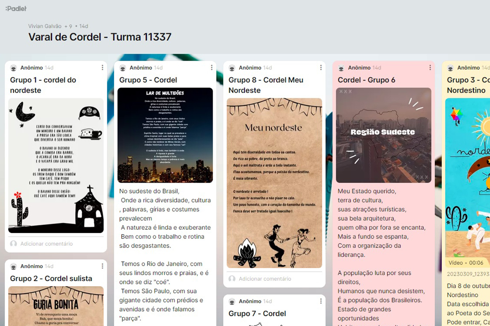

Fala aí Instrutor
Criatividade e interação durante o treinamento, foi isso que a Instrutora Vivian Galvão, da filial EaD fez com os jovens da turma 11337 (etapa final).
Os jovens realizaram uma atividade em grupo, em que deveriam escolher uma das cinco regiões do Brasil e pesquisar sobre as variações linguísticas. Após o levantamento dessas informações, os jovens apresentaram essas descobertas em um varal de cordel.
O varal de cordel foi inserido no padlet, os jovens compartilharam lindos trabalhos e puderam compreender a literatura de cordel.